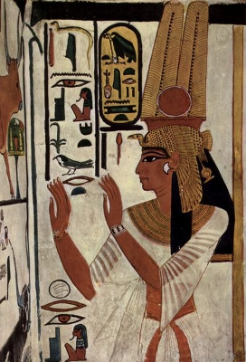

Firavunluk, eski Mısır’da hükümdarlara verilen unvandır. Firavunlar devletin ve hanedanlığın başı olduğu gibi tanrı Horus’un yeryüzündeki imgesi ve güneş tanrısı Ra’nın oğlu olarak da kabul ediliyordu. Genellikle Nemes başlığını süsleyen bir etek giymiş olarak resmedilirdi. Firavunlar tanrının yeryüzündeki temsilcileri ve oğlu olarak kendileri de tanrısal bir karakter taşımışlardır. Bu yüzden de tanrı krallar olarak da bilinirler. Firavun sözcük anlamıyla eski Mısır dilinde “Büyük Ev” demektir. Ancak zamanla yeni anlamlar yüklenerek hükümdar unvanı haline gelmiştir.
Firavunluk kan bağı ile babadan oğla geçen kapalı bir sistemdir. Bu yüzden zaman zaman devlet bürokrasisinin ileri gelenleri hanedanlığı ele geçirerek firavunlar soyunun kendilerinden devam etmeleri için ara dönemlerde iktidar kavgasına girişmişlerdir. Firavunluk sisteminde, soyun bozulmaması ve saf kalması için firavunlar kendi kız kardeşleri ve kız çocukları ile evlenebilirlerdi. Bu tanrı soyunun insan soyundan üstünlüğünün de bir simgesi olarak kabul ediliyordu.
Firavunlar, devletin sahibi ve baş yöneticisi olduğundan mutlak bir yetki ve otoriteye sahiptiler. Devletin bütün işlerinde tek başına karar alma yetkilerine sahip oldukları halde önemli kararları yine de devlet bürokrasinin üst kademelerinden danışmanları, yüksek ruhbanlar, büyücüler ve ordu komutanlarına fikir danışarak alırlardı. Bu nedenle firavun yönetiminde yüksek bürokrasi her zaman etkili olmuştur.
Firavun olmak için anne tarafından soylu kan taşımak belirleyici bir unsurdu. Bu anaerkil geleneklerin Mısır hanedanlık sistemi içinde hala geçerliliğini koruduğunu göstermesi bakımından ilginçtir. Bu yüzden halktan kimi erkekler tam kan soylu bir kadınla evlenerek tahta çıkabilmişlerdir. Firavunların kutsal ve gizemli kabul edilen birçok ismi ve unvanı vardı. Bu unvanların en sonuncusunu tahta çıktıkları zaman alıyorlardı ve genellikle bu ad, o firavunun izleyeceği politikaların da habercisi oluyordu. Örneğin savaş tanrısı Mantu’nun adını kullanarak Mantuhotep (Mantu hoştur) ismini alan bir firavun, askeri seferler yapacağını ilan etmiş oluyordu. Firavunların bu isim değiştirme ve unvan alma konusunda, ülkedeki dinsel çatışmalar ve figürler de büyük oranda belirleyici oluyordu. Bunun en tipik örneği, IV. Amonofis’in Aton dinine geçtikten sonra ismini Akhenaton olarak değiştirmesidir. Kimi zaman firavunlarla birlikte karısı ve çocukları da isimlerini değiştirirlerdi. Bu durum, firavunun kişisel otoritesi etrafında şekillenen hanedanlığın ortak davranış kalıpları ve tutum geliştirdiklerini gösteriyordu.
Firavunlar dış ilişkilere bağlı olarak savaş halindeki bir ülkeye barış ilan etmek ya da bir bölgeyi kolonileştirmek için başka ülke krallarının kızları ile de evlenebilirlerdi. Bu evlilikler siyasi amaçlı evlilikler olduğundan firavunla kızını evlendiren kral da Mısır üzerinde bu yolla nüfuz sahibi olmaya çalışırdı. Kadeş savaşının sonunda Hattuşil’in kızını büyük kraliçe olarak II. Ramses’e göndermekte ısrar etmesinin nedeni, Mısır üzerinde nüfuz sahibi olmak istemesinden kaynaklanmıştır.

Nil kıyısındaki firavun sarayının temsili resmi.
Firavunlar, çocuk yaşta tahta oturdukları gibi ölene kadar da tahtta kalırlardı. Zira firavunluk yetkesi tanrı tarafından verilmiş yetke idi ve tanrı, oğlu firavunu yanına alana kadar firavun tanrı adına devleti yönetmeyi sürdürürdü. Küçük yaşta tahta oturan firavunlar, ergenlik çağını geçip devleti kendi başlarına yönetebilecek bir olgunluğa erişinceye kadar devlet yönetiminde firavunun annesi ya da genellikle bir akrabası olan devletin üst düzey bürokratı firavunluk yetkilerini kullanırdı. Ancak çocuk firavun, her koşulda devletin gerçek sahibi olarak saygı görür ve sarayda yaşardı. Firavunların çocuk yaşta olması kimi siyasal çatışmaları ve iktidar kavgalarını da körükleyici bir rol oynardı. Mevcut otorite boşluğunu iktidarı ele geçirmekte bir fırsat olarak değerlendiren komutanlar ya da devlet yöneticiler, böylesi dönemler büyük kraliçeyi saf dışı bırakarak yönetimde söz sahibi olmak için çeşitli komplolara yönelirlerdi. Bu nedenle eski Mısır hanedanlıklarında siyasal komplolar, hizipler, alttan alta kaynayan iktidar savaşları sürekli yaşanmıştır.
Firavunlar iktidarları dönemlerinde yetki ve güçlerinin kanıtı olarak büyük tapınaklar, heykeller ve kitabeler inşa ettirmişlerdir. Bu simgeler, firavunun gücünü gösterdiği gibi halkı egemenlik altında tutmanın da önemli araçlarıydı. II. Ramses’in Ebu-Simbel’de yaptırdığı ve normal insan boyutlarının iki katı olan heykelleri, firavunun azameti göstermesi bakımından anılmaya değer heykellerdir.
Firavunlar, iktidarları döneminde geçen tarihsel olayları kitabelere yazdırarak kendi devrinde kazandıkları zaferleri, kahramanlıkları, önemli siyasal olayları kalıcı hale getirirlerdi. Ancak bu yazıtlar olayların nesnel biçimlerini ifade etmekten uzak, firavunun kahramanlık menkıbeleriyle dolu, bir tür resmi tarih yazıcılığı biçiminde vücut bulan tarihsel bilgelere yer vermektedir. Bu bilgiler, tarihçiler tarafından ön kabulle doğru olarak kabul edildiğinde tarihsel gerçeklerden uzak, yanıltıcı bilgiler haline gelebilmektedir. Kadeş savaşının sonuçları hakkında Ebu Simbel tapınağındaki yazıtlarda yer alan bilgiler bu tür yanıltıcı bilgilerdendir. Zira bu yazıtlarda savaşın kazanan tarafının Mısır hanedanlığı olduğu yönünde şatafatlı ifadelere yer vermekte ve II. Ramses bu kitabede kendini Kadeş savaşının muzafferi ilan etmektedir. Oysa tarihsel gerçekler bununla bağdaşmamaktadır. Kadeş savaşında Hitit orduların hem sayı hem de teçhizat bakımından bariz bir üstünlüğü vardır. Kadeş antlaşmasının maddelerine bakıldığında eşitlikçi ve yansız bir tutum gözükmekle birlikte Hititlerin daha kazançlı çıktığı söylenebilir. Kadeş savaşının, Asur baskısıyla kesilmesi, II. Ramses’in çok daha yıkıcı olabilecek bir sonuçla karşılaşmasını engellemiştir. Hal böyle iken, savaşın Mısır galibiyeti ile sonuçlandığını ileri sürmek, Mısır merkezli bir resmi tarih yazıcılığının ürünüdür.
Firavunlar ölene dek idarede kalıyorlardı. Bilinen en uzun iktidar 92 yılla eski krallıktaki son hükümdar Pepi II Neferkare’ye aittir. Uzun süre tahtta kalabilmek için her 30 yılda bir sihirli bir tören olan heb-set gençleşme festivali yapılıyordu. Firavun öldüğü zaman cesedi mumyalanıyor, 70 günlük yastan sonra dirilince kullanmak üzere topladığı mallarla birlikte bir lahde konuluyor ve mezar kapatılıyordu.
Eski Mısırlılar, arkalarında sayısız hiyeroglif, mezar odaları, mumyalar, tapınaklar, saraylar ve yazılı belgeler bıraktıkları halde, Antik Mısır bizim için gizemini hala korumaya devam ediyor. Çünkü Mısırlılar, başlarından geçen olayları doğru ve detaylı bir şekilde yazmıyorlardı. Yenilgi, kıtlık, hastalık, vs. gibi, Firavun ve onun hâkimiyetine gölge düşürebilecek olaylar yok sayılır, bunlar belgelenmezdi. Bu bakımdan bu hiyeroglifleri, bilinen en eski siyasi propaganda araçları olarak da düşünebiliriz.
Firavunlar dönemi Mısır’da köleci monarşilerin egemenlik sürdüğü bir dönemdir. Sınıflar arası çelişkiler ve uçurumlar hat safhadadır. Başta firavun olmak üzere yüksek din adamları, devlet bürokrasisi ve komutanlar, sınıfsal piramidin en üst katmanlarını oluştururlar. Yerli Mısır halkı dışardan gelen göçmenlere karşısında daha ayrıcalıklı bir konuma sahiptir. Görkemli tapınaklar, suyolları, heykeller, anıt mezarlar vs. on binlerce yabancı kölenin yıllar süren çalışmaları sonucu inşa edilirken tarihte eşi az görülür bir baskı ve sömürünün de örneğini teşkil eder. Mısır’a göç eden Hiksoslar ve İsrailoğulları kavmi, köle angaryalarında kullanılan temel üretici güçtür. Bunlar devlet içinde egemenlik mücadelesine girince Mısır’dan kovularak ana yurtlarına göç etmişlerdir. Eski Mısır devletindeki sınıfsal ayrılık ölü gömme törenlerine de damgasını vurmuştur. Firavunlar ve yüksek sınıf mensupları görkemli anıt mezarlara gömülürken, sıranda halkın mezarları bakımsızdır. Mısır ölü gömme geleneklerine göre, ölünün değerli günlük eşyaları da birlikte gömülürdü. Bugün arkeologların yaptığı kazılarda eski çağlarda yaşamış bir Mısırlının sınıfsal konumu mezarından çıkan eşyalara bakılarak kolaylıkla tespit edilebilmektedir.